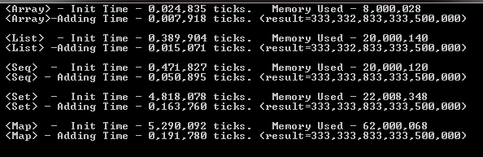

F# C# - Performance of Collections: Array, List, Seq, Set, Map.
Introduction
F# C# - Performance of Collections: Array, List, Seq, Set (HashSet), Map (Dictionary).
When you think about data you always need to think about performance,
This project allows you to play with Array, List, Seq, Set, Map.
Best performance and best memory usage as expected in Array.
Second place in List.
F#

C#

If you need to process big data probably you need to think about using Array, for size less than 100,000 you can use any Collection which best feet you're needed
Building the Sample
Bring project and click solution/project file and RUN
Description
|
List - |
An ordered, immutable series of elements of the same type. Implemented as a linked list. |
Array - A fixed-size, zero-based, mutable collection of consecutive data elements that are all of the same types.
Seq - A logical series of elements that are all of one type. Sequences are particularly useful when you have a large, ordered collection of data but don't necessarily expect to use all the elements. Individual sequence elements are computed only as required, so a sequence can perform better than a list if not all the elements are used.
Map - An immutable dictionary of elements. Elements are accessed by key.
Set - An immutable set that's based on binary trees, where comparison is the F# structural comparison function
open System open System.Diagnostics let sw = new Stopwatch() let testArr() = let mutable result = 0L do sw.Reset() do sw.Start() //let testArray : int64[] = [| for i in 1 .. 100_000 -> i * i|] let startBytes = System.GC.GetTotalMemory(true) let testArray : int64[] = Array.init 1_000_000 (fun i -> int64(i) * int64(i)) let stopBytes = System.GC.GetTotalMemory(true) do GC.KeepAlive(testArray) // This ensure a reference to object keeps object in memory do sw.Stop() let timeInitArray = sw.ElapsedTicks.ToString("0,000,000") + " ticks. Memory Used - " + ((stopBytes - startBytes)).ToString("0,0") do Console.WriteLine(" <Array> - Init Time - " + timeInitArray ) do sw.Reset() do sw.Start() //do Array.fold (fun acc x -> acc + x ) 0 testArray |> (fun x -> result <- x) //do testArray |> Array.iter (fun x -> result <- result + x) for i in 0 .. testArray.Length - 1 do result <- result + testArray.[i] do sw.Stop() do Console.WriteLine(" <Array>-Adding Time - " + sw.ElapsedTicks.ToString("0,000,000") + " ticks. (result=" + result.ToString("0,0") + ")" ) do Console.WriteLine() let testLst() = let mutable result = 0L do sw.Reset() do sw.Start() let startBytes = System.GC.GetTotalMemory(true) //let testList: int64 list = [ for i in 1 .. 100_000 -> int64(i) * int64(i)] let testList : int64 list = List.init 1_000_000 (fun i -> int64(i) * int64(i)) let stopBytes = System.GC.GetTotalMemory(true) do GC.KeepAlive(testList) // This ensure a reference to object keeps object in memory do sw.Stop() let timeInitList = sw.ElapsedTicks.ToString("0,000,000") + " ticks. Memory Used - " + ((stopBytes - startBytes)).ToString("0,0") do Console.WriteLine(" <List> - Init Time - " + timeInitList ) do sw.Reset() do sw.Start() do List.fold (fun acc x -> acc + x ) 0L testList |> (fun x -> result <- x) do sw.Stop() do Console.WriteLine(" <List> -Adding Time - " + sw.ElapsedTicks.ToString("0,000,000") + " ticks. (result=" + result.ToString("0,0") + ")" ) do Console.WriteLine() let testSeq() = let mutable result = 0L do sw.Reset() do sw.Start() let startBytes = System.GC.GetTotalMemory(true) let testSeq : int64 seq = [ for i in 1 .. 1_000_000 -> (int64)i * (int64)i] |> Seq.ofList //let testSeq = Seq.init 1_000_000 (fun i -> (int64)i * (int64)i) let stopBytes = System.GC.GetTotalMemory(true) do GC.KeepAlive(testSeq) // This ensure a reference to object keeps object in memory do sw.Stop() let timeInitList = sw.ElapsedTicks.ToString("0,000,000") + " ticks. Memory Used - " + ((stopBytes - startBytes)).ToString("0,0") do Console.WriteLine(" <Seq> - Init Time - " + timeInitList ) do sw.Reset() do sw.Start() do Seq.fold (fun acc x -> acc + x ) 0L testSeq |> (fun x -> result <- x) do sw.Stop() do Console.WriteLine(" <Seq> - Adding Time - " + sw.ElapsedTicks.ToString("0,000,000") + " ticks. (result=" + result.ToString("0,0") + ")" ) do Console.WriteLine() let testSet() = let mutable result = 0L do sw.Reset() do sw.Start() let startBytes = System.GC.GetTotalMemory(true) let testSet : Set<int64> = [| for i in 1 .. 1_000_000 -> (int64)i * (int64)i|] |> Set.ofArray let stopBytes = System.GC.GetTotalMemory(true) do GC.KeepAlive(testSet) // This ensure a reference to object keeps object in memory do sw.Stop() let timeInitList = sw.ElapsedTicks.ToString("0,000,000") + " ticks. Memory Used - " + ((stopBytes - startBytes)).ToString("0,0") do Console.WriteLine(" <Set> - Init Time - " + timeInitList ) do sw.Reset() do sw.Start() do Seq.fold (fun acc x -> acc + x ) 0L testSet |> (fun x -> result <- x) do sw.Stop() do Console.WriteLine(" <Set> - Adding Time - " + sw.ElapsedTicks.ToString("0,000,000") + " ticks. (result=" + result.ToString("0,0") + ")" ) do Console.WriteLine() let testMap() = let mutable result = 0L do sw.Reset() do sw.Start() let startBytes = System.GC.GetTotalMemory(true) let testMap : Map<int,int64> = [ for i in 1 .. 1_000_000 -> ( i , (int64)i * (int64)i)] |> Map.ofList let stopBytes = System.GC.GetTotalMemory(true) do GC.KeepAlive(testMap) // This ensure a reference to object keeps object in memory do sw.Stop() let timeInitList = sw.ElapsedTicks.ToString("0,000,000") + " ticks. Memory Used - " + ((stopBytes - startBytes)).ToString("0,0") do Console.WriteLine(" <Map> - Init Time - " + timeInitList ) do sw.Reset() do sw.Start() do for (KeyValue(i, x)) in testMap do result <- result + x do sw.Stop() do Console.WriteLine(" <Map> - Adding Time - " + sw.ElapsedTicks.ToString("0,000,000") + " ticks. (result=" + result.ToString("0,0") + ")" ) do Console.WriteLine() let runAllTests() = do testArr() do testLst() do testSeq() do testSet() do testMap() [<EntryPoint>] let main argv = do runAllTests() do Console.ReadLine() |> ignore 0 // return an integer exit code
open System open System.Diagnostics let sw = new Stopwatch() let testArr() = let mutable result = 0L do sw.Reset() do sw.Start() //let testArray : int64[] = [| for i in 1 .. 100_000 -> i * i|] let startBytes = System.GC.GetTotalMemory(true) let testArray : int64[] = Array.init 1_000_000 (fun i -> int64(i) * int64(i)) let stopBytes = System.GC.GetTotalMemory(true) do GC.KeepAlive(testArray) // This ensure a reference to object keeps object in memory do sw.Stop() let timeInitArray = sw.ElapsedTicks.ToString("0,000,000") + " ticks. Memory Used - " + ((stopBytes - startBytes)).ToString("0,0") do Console.WriteLine(" <Array> - Init Time - " + timeInitArray ) do sw.Reset() do sw.Start() //do Array.fold (fun acc x -> acc + x ) 0 testArray |> (fun x -> result <- x) //do testArray |> Array.iter (fun x -> result <- result + x) for i in 0 .. testArray.Length - 1 do result <- result + testArray.[i] do sw.Stop() do Console.WriteLine(" <Array>-Adding Time - " + sw.ElapsedTicks.ToString("0,000,000") + " ticks. (result=" + result.ToString("0,0") + ")" ) do Console.WriteLine() let testLst() = let mutable result = 0L do sw.Reset() do sw.Start() let startBytes = System.GC.GetTotalMemory(true) //let testList: int64 list = [ for i in 1 .. 100_000 -> int64(i) * int64(i)] let testList : int64 list = List.init 1_000_000 (fun i -> int64(i) * int64(i)) let stopBytes = System.GC.GetTotalMemory(true) do GC.KeepAlive(testList) // This ensure a reference to object keeps object in memory do sw.Stop() let timeInitList = sw.ElapsedTicks.ToString("0,000,000") + " ticks. Memory Used - " + ((stopBytes - startBytes)).ToString("0,0") do Console.WriteLine(" <List> - Init Time - " + timeInitList ) do sw.Reset() do sw.Start() do List.fold (fun acc x -> acc + x ) 0L testList |> (fun x -> result <- x) do sw.Stop() do Console.WriteLine(" <List> -Adding Time - " + sw.ElapsedTicks.ToString("0,000,000") + " ticks. (result=" + result.ToString("0,0") + ")" ) do Console.WriteLine() let testSeq() = let mutable result = 0L do sw.Reset() do sw.Start() let startBytes = System.GC.GetTotalMemory(true) let testSeq : int64 seq = [ for i in 1 .. 1_000_000 -> (int64)i * (int64)i] |> Seq.ofList //let testSeq = Seq.init 1_000_000 (fun i -> (int64)i * (int64)i) let stopBytes = System.GC.GetTotalMemory(true) do GC.KeepAlive(testSeq) // This ensure a reference to object keeps object in memory do sw.Stop() let timeInitList = sw.ElapsedTicks.ToString("0,000,000") + " ticks. Memory Used - " + ((stopBytes - startBytes)).ToString("0,0") do Console.WriteLine(" <Seq> - Init Time - " + timeInitList ) do sw.Reset() do sw.Start() do Seq.fold (fun acc x -> acc + x ) 0L testSeq |> (fun x -> result <- x) do sw.Stop() do Console.WriteLine(" <Seq> - Adding Time - " + sw.ElapsedTicks.ToString("0,000,000") + " ticks. (result=" + result.ToString("0,0") + ")" ) do Console.WriteLine() let testSet() = let mutable result = 0L do sw.Reset() do sw.Start() let startBytes = System.GC.GetTotalMemory(true) let testSet : Set<int64> = [| for i in 1 .. 1_000_000 -> (int64)i * (int64)i|] |> Set.ofArray let stopBytes = System.GC.GetTotalMemory(true) do GC.KeepAlive(testSet) // This ensure a reference to object keeps object in memory do sw.Stop() let timeInitList = sw.ElapsedTicks.ToString("0,000,000") + " ticks. Memory Used - " + ((stopBytes - startBytes)).ToString("0,0") do Console.WriteLine(" <Set> - Init Time - " + timeInitList ) do sw.Reset() do sw.Start() do Seq.fold (fun acc x -> acc + x ) 0L testSet |> (fun x -> result <- x) do sw.Stop() do Console.WriteLine(" <Set> - Adding Time - " + sw.ElapsedTicks.ToString("0,000,000") + " ticks. (result=" + result.ToString("0,0") + ")" ) do Console.WriteLine() let testMap() = let mutable result = 0L do sw.Reset() do sw.Start() let startBytes = System.GC.GetTotalMemory(true) let testMap : Map<int,int64> = [ for i in 1 .. 1_000_000 -> ( i , (int64)i * (int64)i)] |> Map.ofList let stopBytes = System.GC.GetTotalMemory(true) do GC.KeepAlive(testMap) // This ensure a reference to object keeps object in memory do sw.Stop() let timeInitList = sw.ElapsedTicks.ToString("0,000,000") + " ticks. Memory Used - " + ((stopBytes - startBytes)).ToString("0,0") do Console.WriteLine(" <Map> - Init Time - " + timeInitList ) do sw.Reset() do sw.Start() do for (KeyValue(i, x)) in testMap do result <- result + x do sw.Stop() do Console.WriteLine(" <Map> - Adding Time - " + sw.ElapsedTicks.ToString("0,000,000") + " ticks. (result=" + result.ToString("0,0") + ")" ) do Console.WriteLine() let runAllTests() = do testArr() do testLst() do testSeq() do testSet() do testMap() [<EntryPoint>] let main argv = do runAllTests() do Console.ReadLine() |> ignore 0 // return an integer exit code